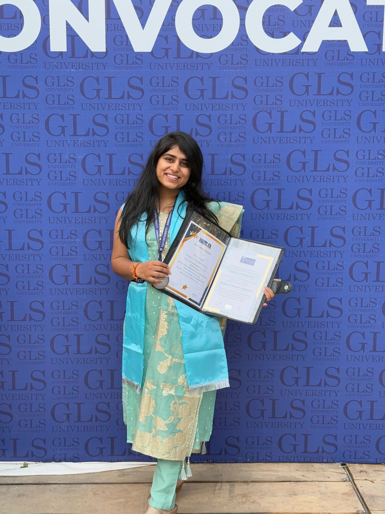

About Me
Product thinking with a data lens.
I’m Kashish Khubchandani, an IT postgraduate focused on Product Management, Project Coordination, Data Analytics, Business Analysis and Business Intelligence. I enjoy understanding user behavior, improving workflows, coordinating with teams and turning data into clear decisions.
My work connects Zoho CRM workflows, chatbot journeys, user behavior analysis, dashboards, sprint coordination and clean UI improvements. I like roles where product, data, business and technology work together.
Education History
2024 – 2026
M.Sc. IT
Dhirubhai Ambani University, Gandhinagar
CPI: 7.6. Focused on information technology, data, product understanding and technical systems.
2021 – 2024
Bachelor of Computer Applications
GLS University, Ahmedabad
CPI: 9.0. Built strong foundations in programming, databases, web development and application logic.
2021
12th Grade
Kendriya Vidyalaya Sabarmati, CBSE
Percentage: 87.4%
2019
10th Grade
Kendriya Vidyalaya Sabarmati, CBSE
Percentage: 69.7%